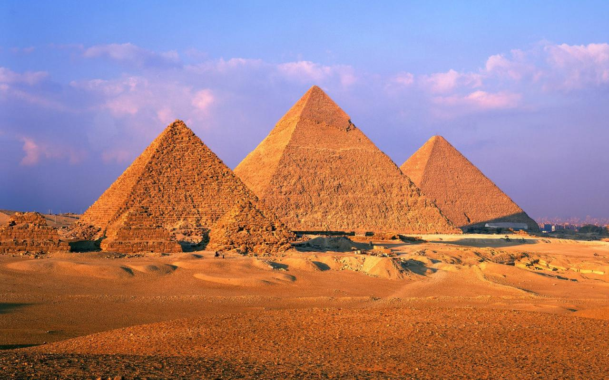

Las Antiguas Maravillas del Mundo
Las siete maravillas del mundo conocido por los griegos helenísticos fueron
seleccionadas por el pintor neerlandés Maerten van Heemskrerck en el siglo XVI
en una serie de siete cuadros, que muestran las obras arquitectónicas y escultóricas
que marcaron un antes y un después en la historia.
Previamente autores como Filón de Bizancio,Antípatro de Sidón, Gregorio Nacianceno o Beda el Venerable, entre otros, habían confeccionado
sus respectivos listados. Sólo una de ellas se mantiene actualmente en pie. Mientras la existencia
de otras es todavía un misterio para investigadores y expertos en la materia. La pregunta más frecuente
es: ¿por qué escogieron solo siete puntos de referencia? La cultura helenística consideraba tal cifra como
el número perfecto.
Octava Maravilla (Honorifica)

Se consideró que la Gran Pirámide de Guiza (Egipto) sería la octava maravilla honorífica.
La Gran Pirámide había sido excluida de la votación, por ser la más antigua y la única que
aún perdura de las siete maravillas del mundo antiguo. El hecho se dio en el marco de una gran
oposición de las autoridades culturales egipcias, tales como Zahi Hawass, secretario general del
Consejo Superior de Antigüedades del gobierno egipcio (Ministro de Antigüedades hasta 2011),